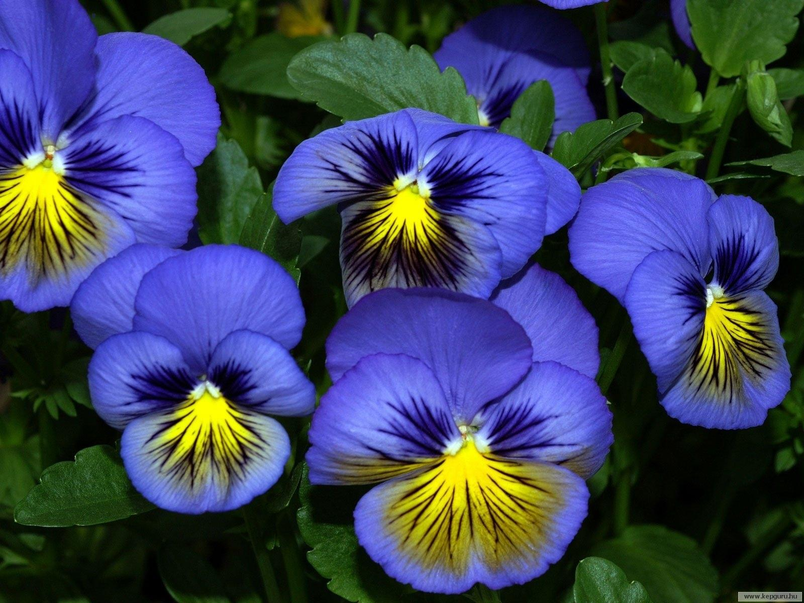

Фиалка
Фиалка – это многолетний, цветущий кустарник, с коротким стеблем и мясистыми, изумрудными листьями. Как правило, пластины имеют легкое опушение, но могут быть и глянцевыми. Но ценится фиалка отнюдь не за листву, а за яркие цветоносы. При правильном уходе они покрывают миниатюрный кустарник практически круглый год.
Комнатная фиалка по праву завоевала множество подоконников, оранжерей и теплиц. Этот маленький цветок покоряет своей компактностью, эстетичностью и прекрасным цветением. Но все же большинство людей ошибочно называют их фиалками, ведь с растениями, которые носят это имя их почти ничего не связывает.Официальное название – сенполия , в некоторых источниках их все же называют узамбарскими фиалками.
Энергетическое влияние и суеверия
Характеристика комнатных фиалок будет неполной без упоминания об их энергетической составляющей .Фиалки очень чувствительны не только к сквознякам из окна, но и к плохой энергетике в доме . В домах, где много ссорятся, а члены семьи страдают от перепадов настроения и депрессий, фиалки обычно цветут плохо и склонны пропадать.
Фиалка приносит в дом спокойствие и гармонию, чистит пространство от негатива . Принося в дом богатство, улучшает здоровье и продолжает длительность жизни.
Энергетика растений частично зависит от их окраса:
Белые – чистота, женственность, покой, умиротворение, освобождение от гнетущего. Этот цвет подходит для успокоения, как для людей в состоянии агрессии, так и тем, кто эмоционально очень чувствительный. Притупляя чувство злобы, переживаний и страхов, общение с белой фиалкой приносит спокойствие. Рекомендуют ставить белые фиалки в комнатах где живут дети, особенно если между ними часто возникают ссоры;
Красные всех оттенков – очищают дом от негативной энергетики, лечат депрессии, и помогают пессимистам. Человек, у которого в доме селится фиалка таких цветов, начинает позитивней относится к своей жизни;
Голубые и синие – олицетворяют объединение земного и воздушного, пробуждает творческие способности. Часто их размещают в комнатах у детей, которых стремятся научить искусству – музыке, пению, рисованию. А еще голубой цвет уменьшает аппетит, и полезно их размещать на кухне, желая похудеть;
Фиолетовые – помогают взаимопониманию, постижению духовного, мудрого, а также для медитаций и чтения будущего. Их ставят у себя преподаватели, писатели, психологи, философы и мыслители.